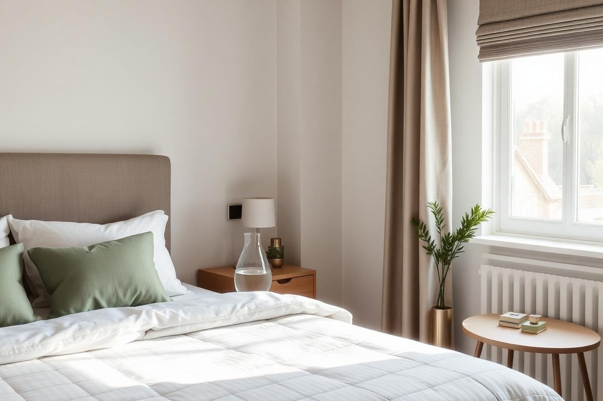
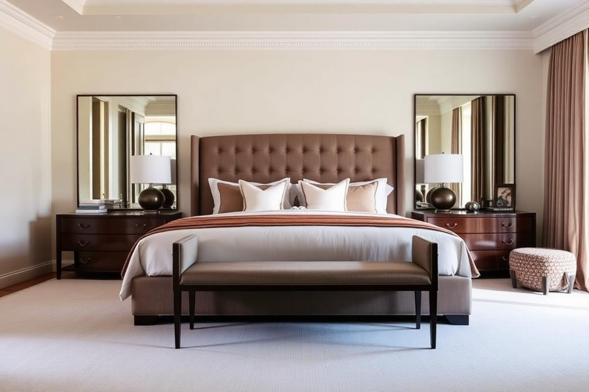

Guest Bedroom Essentials: What Actually Matters
Guest Bedroom Essentials: What Actually Matters is one of those topics where a little planning goes a long way. In this guide I walk through the process we use in real homes — not just what looks good in a photo, but what actually holds up over time.
Start here
Before you buy or move anything, measure the space and note how you actually use it. The best-looking room is one that matches how you live, so start with the routines: where you sit, where you drop keys, where the light falls in the afternoon.
The essentials
Focus on the pieces that do the most work. Get those right and the rest of the room comes together with much less effort. Aim for materials that patina rather than degrade, and colors you will still like in five years.
- Choose one clear focal point per room.
- Pick materials that improve with age.
- Layer textures instead of adding more colors.
- Leave visual breathing room — negative space is a design element.
Common mistakes
The mistakes we see most often are matching everything too tightly, over-scaling accessories, and skipping proper lighting. Fix those three and most rooms improve overnight.

The Art of the Perfect Guest Bed
Beyond just a mattress and sheets, creating a truly inviting guest bed involves thoughtful layering. Begin with a high-quality mattress protector, preferably one that's both waterproof and breathable, like a quilted bamboo option, which provides comfort and preserves the mattress. For sheets, a 300-400 thread count long-staple cotton or linen blend is ideal. Avoid anything below 200TC – it feels scratchy. For a standard queen, you'll need one fitted sheet, one flat sheet. Consider a duvet or quilt with a lightweight down alternative insert (hypoallergenic is key) for year-round comfort. A medium-fill down alternative pillow (two per side for a queen, four total) ensures options for different sleep preferences. Don't forget a decorative throw blanket draped at the foot of the bed adds texture and an extra layer of warmth, instantly elevating the look. A crisp, white duvet cover with a subtle texture always feels luxurious and is easy to bleach for hygiene.
Lighting for Comfort and Function
Thoughtful lighting transforms a guest room from merely functional to genuinely welcoming. Beyond a central overhead light, which is often too harsh, prioritize bedside lamps. Each side of the bed should have its own lamp, ideally with a three-way bulb (e.g., 40/60/100 watts) or a dimmer switch. This allows guests to control the brightness for reading or relaxing. A common mistake is using bulbs with a color temperature above 3000K; aim for soft white (2700K-3000K) for a calming atmosphere. A small night light in a discreet corner ensures safe nighttime navigation without flooding the room with light. If space allows, a floor lamp in a reading nook provides another layer of ambient light. Ensure all light switches are easily accessible from the bed and near the door. For tech-savvy guests, a bedside lamp with an integrated USB charging port is a subtle yet appreciated touch. Avoid harsh, exposed bulbs; diffusing shades are always preferable.
Small Details, Big Impact
It's often the small, seemingly insignificant details that leave the biggest impression. A carafe of fresh water and two clean glasses on the nightstand (replenished daily) is a hotel-level touch. Place a small, shallow dish or tray on the dresser for jewelry or loose change, preventing misplaced items. Stock a small, aesthetically pleasing waste bin, lined, preferably with a lid, for discretion. A full-length mirror, even a simple one leaning against a wall (ensure it's secured to prevent tipping), makes a huge difference, especially for guests getting ready for an event. Consider a small, fresh floral arrangement or a high-quality faux plant to bring life into the room. A scented candle (unlit, with matches) or a subtle room diffuser can add a pleasant aroma, but always offer an unscented option for sensitive guests. A bedside clock, even if most guests use their phones, is a thoughtful backup.
Storage Solutions and Personal Space
Guests appreciate having designated space for their belongings. Clear at least one drawer in a dresser or nightstand, and ensure it's spotless. A common mistake is leaving personal items or cluttered storage in guest spaces. If a closet is available, empty half of it and provide at least six empty hangers – blend classic wooden hangers with a couple of padded ones for delicate garments. A luggage rack, foldable if space is tight, is invaluable; it keeps suitcases off the floor and at a comfortable height for unpacking. Even a small, empty shelf on a bookshelf can serve as a personal spot for books or small items. The key is to convey a sense of 'welcome, this space is yours for now,' rather than 'you're using my overflow storage.' A small, comfortable chair or ottoman provides a place to sit, read, or put on shoes, enhancing the feeling of having a personal retreat.
Thoughtful Tech and Connectivity
In today’s connected world, anticipating tech needs is crucial. Provide a clearly labeled Wi-Fi network name and password on a small, framed card on the nightstand – resist taping it haphazardly. Offer readily accessible power outlets, ideally one on each side of the bed. Many older homes lack sufficient outlets, so a compact, multi-port USB charging station (e.g., Anker 4-port USB charger, approximately $15-20) is a lifesaver. This avoids guests rummaging for an adapter or unplugging your lamps. If your TV has streaming services, ensure guests can easily access them without needing personal logins. A smart speaker (e.g., Google Nest Mini or Amazon Echo Dot) can offer background music or an alarm clock feature, set to a neutral, soft alarm. Avoid complicated smart home systems that guests might struggle with. The goal is seamless convenience, not a tech obstacle course.
Bathroom Basics and Beyond
If guests have a dedicated or private-use bathroom, ensure it’s stocked like a boutique hotel. Provide at least two fresh bath towels (a standard 27"x52" plush cotton is good), two hand towels, and two washcloths per guest. Hang one set, and fold another on a shelf. Miniature toiletries – shampoo, conditioner, body wash, and lotion – are a nice touch, but also have spare, unopened full-size options available just in case. A common oversight: cotton swabs and cotton pads. Place them in a small, lidded jar; they cost pennies but are greatly appreciated. A new, individually wrapped bar of soap, or a fresh pump of liquid hand soap, is essential. Ensure extra toilet paper rolls are visibly stored. Feminine hygiene products in a discreet basket are a thoughtful, always-welcome addition. A small, non-slip bath mat (measuring roughly 17"x24") is a safety and comfort must-have.
Key takeaways
- Match the room to how you actually live.
- Anchor with one main piece and clear lighting.
- Layer textures, not colors.
- Leave breathing room around every object.
Frequently asked questions
Where should I start?
Start with the largest piece and the light. Everything else — art, textiles, small objects — is easier to place once those two anchors are set.
What is a realistic budget?
Prioritize the pieces you touch every day. Spend more on those and less on decorative items, which are easy to swap over time.
How long should this last?
A well-chosen main piece should last 10–15 years. Refreshes come through textiles, art, and accessories, not full replacements.

Sophia Bennett is a certified interior stylist and the senior editor at Styleire. She has spent more than eight years helping homeowners and renters create warm, functional interiors, with hands-on experience across small city apartments and family homes. Her work has been informed by close collaboration with independent designers, craftspeople, and product testers.
View full profile →Related reading

Cozy Bedroom Ideas: 12 Changes That Actually Make a Difference
Cozy is a feeling built from small, specific choices. Here are the twelve that make the biggest difference.

How to Choose Bedding That Actually Feels Good
Thread count is mostly noise. Here is what actually determines how bedding feels.

Master Bedroom Decor Ideas That Feel Like a Hotel
Master Bedroom Decor Ideas That Feel Like a Hotel — a clear, editor-tested guide covering the essentials without the filler.